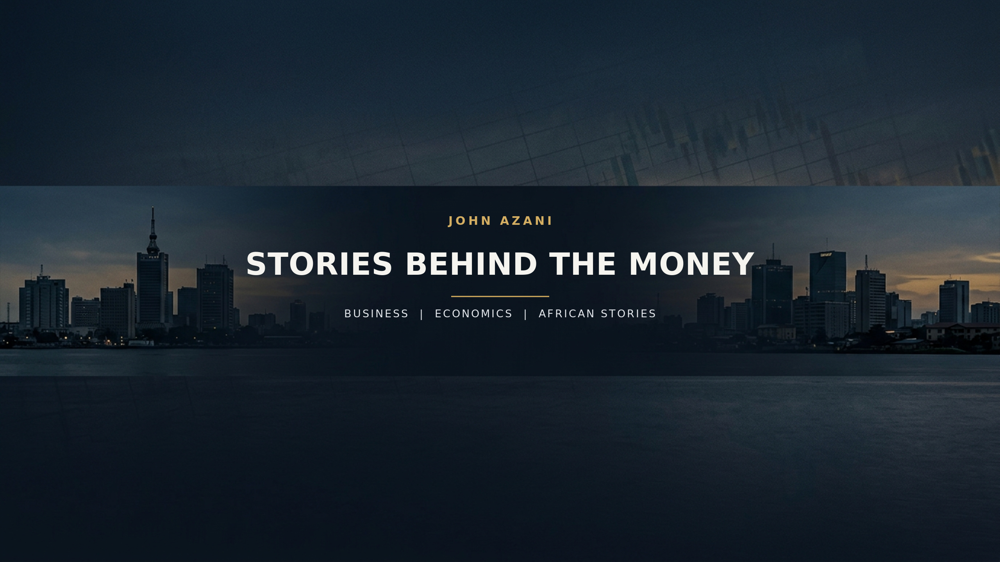

Finance and business documentaries: accounting, corporate collapses, markets, and the decisions behind them. Video sources are listed per scene; source frames keep their original proportions without stretching or cropping.

JOHN AZANI — FINANCE CHANNEL BANNER
DEEP DIVE — How Enron Died
SHORT — How Enron Died
The remaster engine searches free stock video first, then licensed photos. It uses contain-fit with a designed matte, never stretching or cropping the source. See the sourcing and licensing policy.